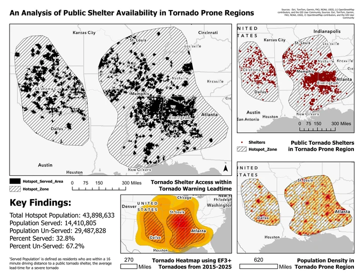
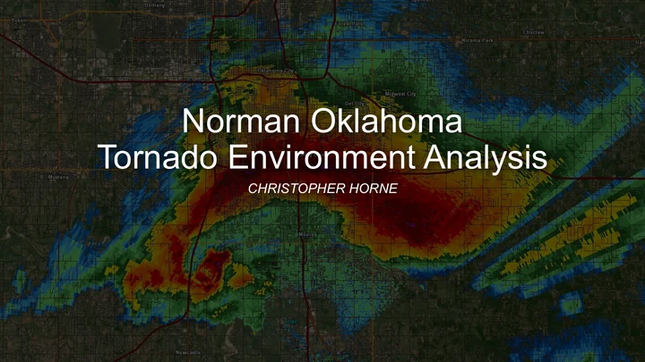
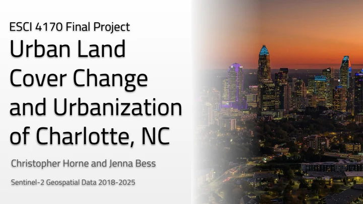

GIS / HAZARD ACCESSIBILITY
Public tornado shelter access
A spatial analysis of historical tornado hotspots, public shelter locations, modeled driving times, and population patterns.
Christopher Horne
GIS for Non-Majors / Final project
03 / SELECTED PROJECTS
Coursework connecting meteorology, spatial analysis, and the decisions people make about weather and the environment.

GIS / HAZARD ACCESSIBILITY
A spatial analysis of historical tornado hotspots, public shelter locations, modeled driving times, and population patterns.
Christopher Horne
GIS for Non-Majors / Final project

METEOROLOGY / SOUNDING ANALYSIS
Comparing instability, wind profiles, and composite parameters across seven selected tornado cases in the Norman / Oklahoma City region.
Christopher Horne
METR Computer Applications / Final project

REMOTE SENSING / URBAN CHANGE
A collaborative Sentinel-2 study of vegetation, moisture, and urban land-cover change in Charlotte between 2018 and 2025.
Christopher Horne & Jenna Bess
ESCI 4170 / Collaborative final project
PUTTING METHODS TO WORK
These projects span shelter accessibility, tornado environments, and satellite-based land-cover change. Each includes the original work, its methods, and the limits that matter when interpreting the results.
Original PDF sources and slide references are retained. Collaborative work is credited on its project page.